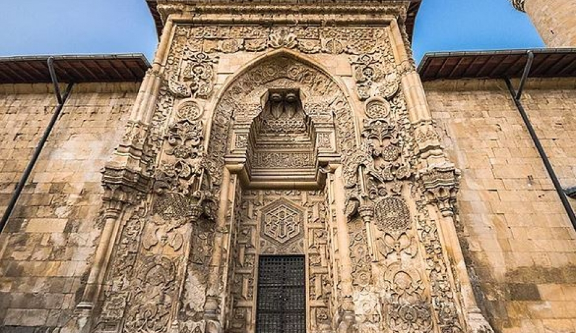

Kültürel Mirasımız
UNESCO Dünya Miras Listesi'nde Bir Başyapıt: Divriği Ulu Camii ve Darüşşifası

Tarihçe ve Önemi
1228-1229 yıllarında Mengücekli Beyi Ahmed Şah tarafından yaptırılan bu eser, İslam mimarisinin en seçkin örneklerinden biridir. "Anadolu'nun Elhamrası" olarak bilinen yapı, bezemeleri ve mimari detaylarıyla eşsizdir.
Yapının en dikkat çekici özelliği, kapılarındaki taş işçiliğidir. Güneşin geliş açısına göre kapılarda oluşan "namaz kılan insan silüeti", mimari dehanın bir göstergesi olarak kabul edilir.
Mimari Özellikler:
- Cennet Kapısı, Batı Kapısı ve Tekstil Kapısı olmak üzere 3 ana kapı.
- Hiçbir motifin kendini tekrar etmediği özgün taş işçiliği.
- Cami ile bitişik inşa edilmiş muazzam bir şifahane (hastane).
1985
UNESCO Listesine Giriş Yılı
Mengücekliler
İnşa Eden Beylik
Sivas / Divriği
Konum